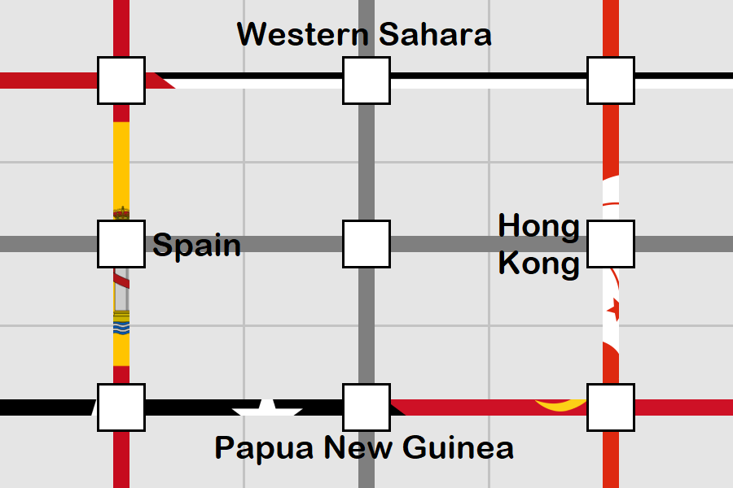
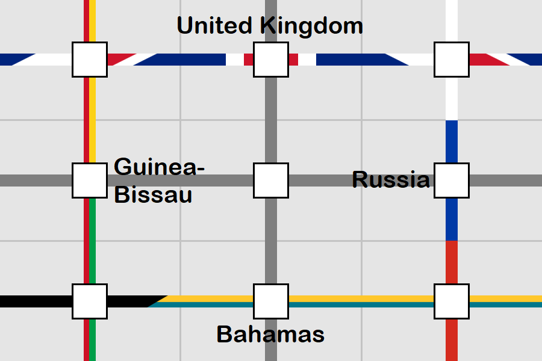
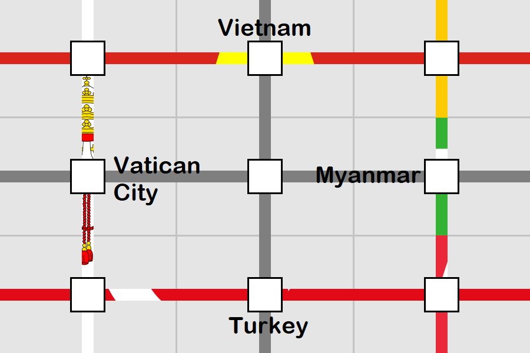
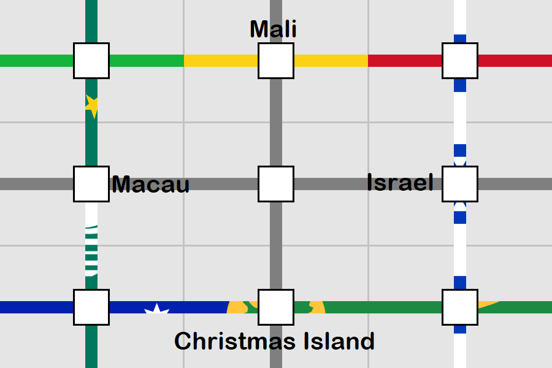

Solution: Cross Lines
Answer: VIRUS
Written by Yannick Yao
The puzzle is presented as five 3 by 3 grids, with a colored stripe running down or across each column or row of each grid. A careful inspection of the non-gray stripes should reveal that all of these stripes are part of flags of countries or regions. This is confirmed by the aspect ratio of the grids that roughly resemble that of most flags, as well as the flavortext’s instruction to “identify stripes’ origins”.
With a combination of pattern/palette recognition and image searches (possibly by the hex codes of the colors), we can find the flags that these stripes belong to:




The capitalized letters in the flavortext (Identify Stripes’ Origins) hints towards looking at the ISO code of these countries/regions. Indeed, when the 3-letter ISO codes (more formally, ISO 3166-1 alpha-3 codes) are entered along the stripes (left-to-right or top-to-bottom), the letters at the intersections match up, similar to a crossword (hence the title).
We are not done yet. The two dark-gray lines and the intersection at the center of the grids indicates that the two hidden countries/regions still need to be identified so that their second letter in ISO codes are the same. After identifying these flags and filling in the grid, the center letters spell the answer VIRUS.
| E | S | H |
| S | V | K |
| P | N | G |
| G | B | R |
| N | I | U |
| B | H | S |
| V | N | M |
| A | R | M |
| T | U | R |
| M | L | I |
| A | U | S |
| C | X | R |
| S | E | N |
| L | S | O |
| B | H | R |
Author’s Notes
This puzzle combines two of my mini puzzle ideas:
- When a puzzle involves a crossword-like grid, if the background is not shaded and there is a 3-by-3 crossing, the center square would look like a normal cell even if it is supposed to be empty, so I would often have an urge to fill something in. A similar mechanic was used in a puzzle from Mezzacotta puzzle competition, but I feel like the 3 by 3 grid is a more natural layout to work with.
- Many flags (especially those with three stripes only) have a lot of redundant information, and could usually be compressed into a single dimension without losing uniqueness. I wondered if I could make a country-themed crossword where each country is clued by a cross-section of its flag running across its row or down its column.
This puzzle went through several iterations of revising before the final form. In the beginning, the boxes and the flavortext were absent, and the stripes were only 1-pixel wide (truly sticking with the “one dimension” concept).
However, these 1-pixel wide stripes were too hard for test-solvers to see, so the widths are later changed to 4 pixels. The ISO aha also turned out to be nearly impossible to come up with, even though some test-solvers did notice some countries/regions sharing first letters. Eventually, it became clear that this needed to be clued more strongly, so the boxes and flavortext were introduced to clue ISO better, and the stripes were changed to their current 20-pixels-wide form.
Fortunately, these modifications landed the puzzle nicely into opening-puzzle difficulty, so depending on your puzzle experience, I hope you enjoyed this puzzle as a warm-up exercise for the later puzzles, or as a more gentle introduction to this style of puzzle.